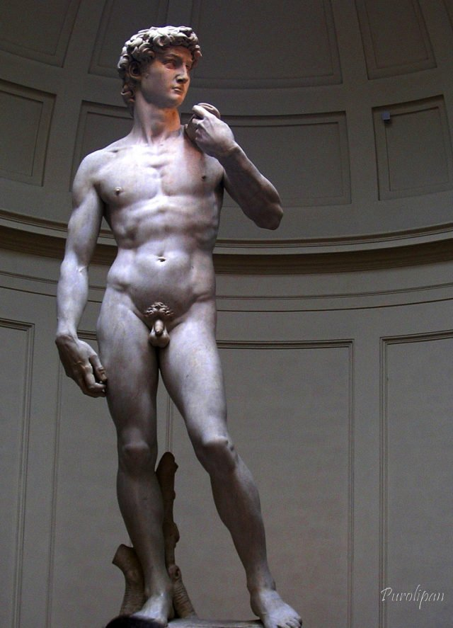
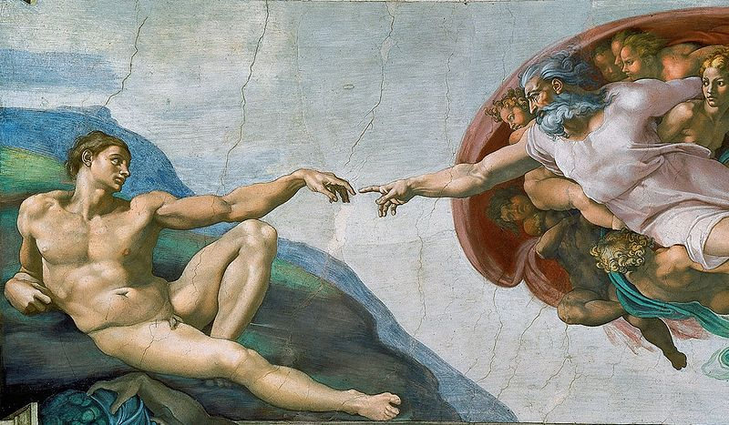
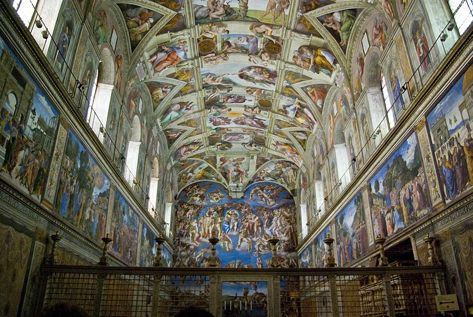
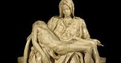

Diluvio

Miguel Ángel Bounarroti fue un escultor, pintor y arquitecto italiano de los siglos XV y XVI (nació el 6 de marzo de 1475 y murió el 18 de febrero de 1564) conocido principalmente por la escultura del «David» y la obra pictórica que recubre la bóveda de la Capilla Sixtina.
Nació en Caprese, municipio italiano de la provincia de Arezzo, denominado actualmente Caprese Michelangelo en su honor. Comenzó su formación como pintor a los 12 años en el taller de la familia Ghirlandaio y un año más tarde se adentraría en el mundo de la escultura a través de Bertoldo di Giovanni, el cuál le introduciría en el influyente círculo de los Médici. Desde entonces desarrolló una fructífera vida artística entre Florencia y Roma, de cuyo amplio legado destacan dos grandes obras: El David y la bóveda de la Capilla Sixtina
El David |
La creación de Adán |
La capilla sixtina |
Piedad del vaticano |
Diluvio |